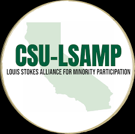
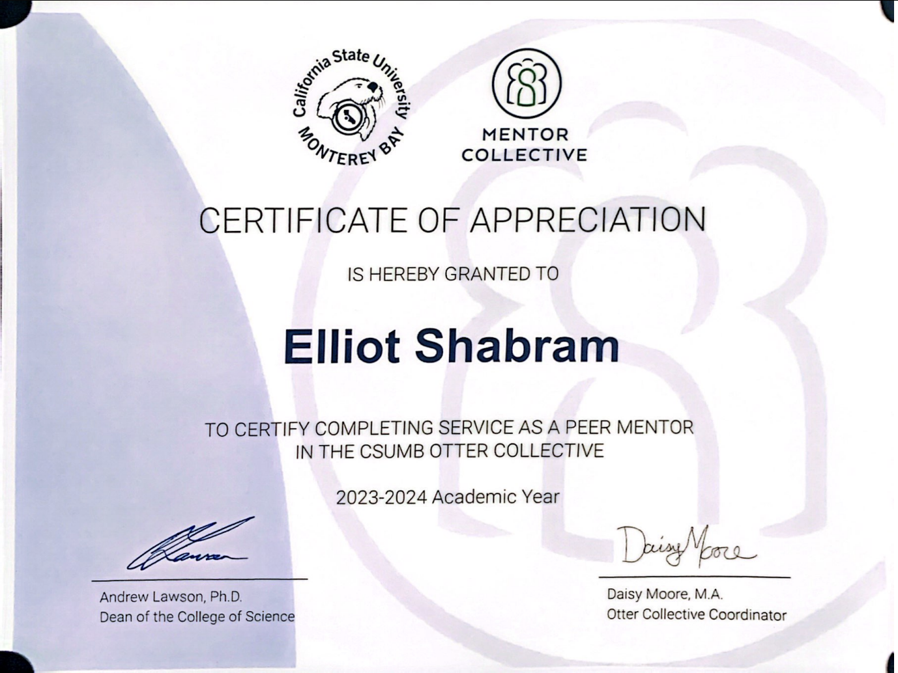

UC Davis
Master of Science in Computer Science.
Recognition
These programs helped shape my path through computer science research and gave me chances to build, present, mentor, and keep sharpening my work through CSUMB and UC Davis.
Education
Master of Science in Computer Science.
Bachelor of Science in Computer Science, Networks and Security concentration, magna cum laude, GPA 3.925.
Teaching assistant for CST 311: Introduction to Networks from August 2023 through May 2024.

Capstone award
My team received the CS Faculty Choice Award for SafePi, a secure IoT home security system built from the ground up with a Node.js server, OAuth2, Android provisioning app, BLE setup flow, Wi-Fi sign-in, and embedded Linux software on a Raspberry Pi 4B.
View the SafePi organizationUndergraduate research
I was selected for the Apple Scholars program at California State University, Monterey Bay. The program supported undergraduate research, provided semester funding, and helped me develop this portfolio as a long-term home for my professional work.

STEM support
I was accepted into the California State University Louis Stokes Alliance for Minority Participation program, which supported my early research development and helped make continued STEM work possible.

Mentorship
During my senior year at CSUMB, I mentored transfer and first-year students through academic stress, course preparation, and campus life. That experience reinforced how much good mentorship can affect a student's sense of direction and belonging.